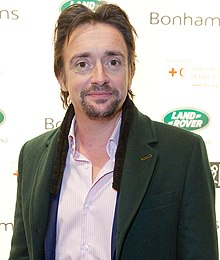

Richard Hammond
Richard Mark Hammond (born 19 December 1969) is an English television presenter, writer, and journalist. He is best known for co-hosting the BBC Two car programme Top Gear from 2002 until 2015 with Jeremy Clarkson and James May. In 2016, Hammond began presenting The Grand Tour television series, produced by W. Chump & Sons. The show is co-presented with his former Top Gear co-hosts, Clarkson and May, as an exclusive distributed via Amazon Video to Amazon Prime customers. More here.